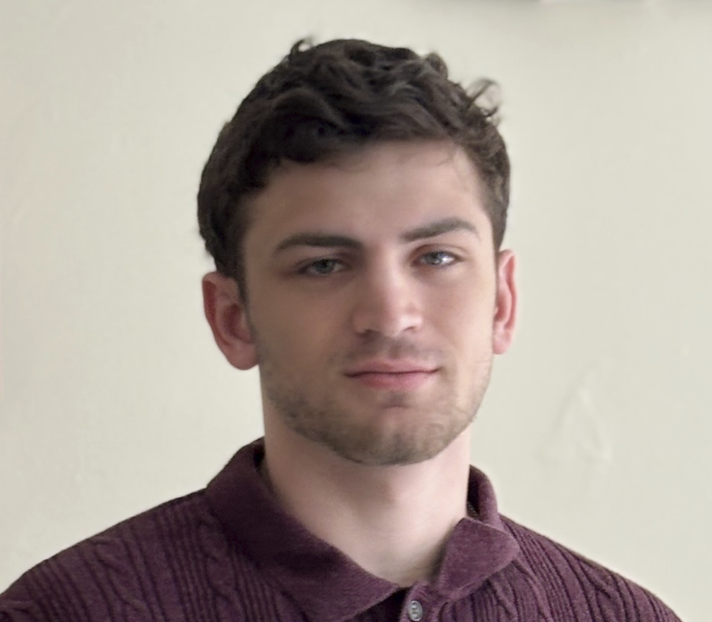
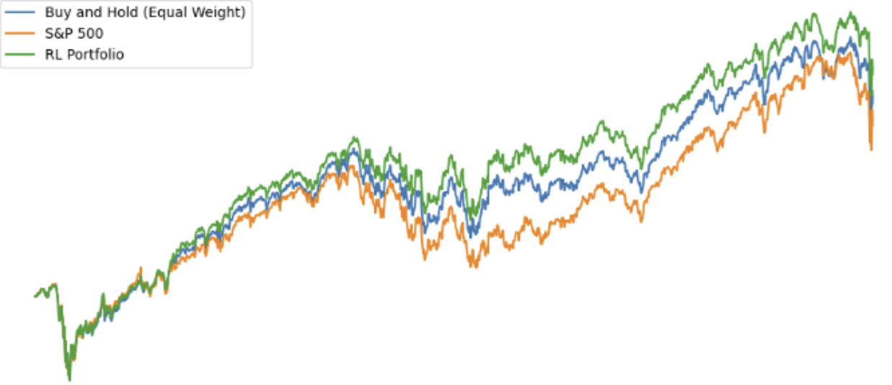
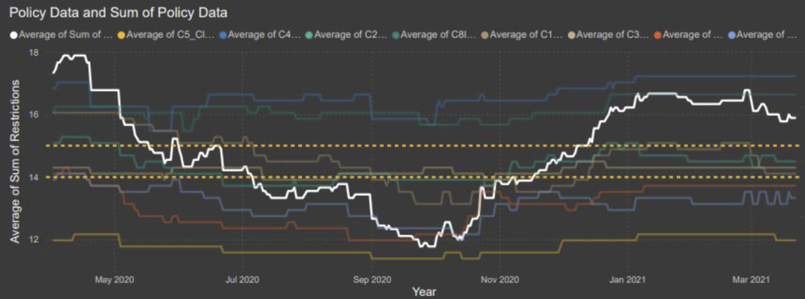

DATA SCIENTIST | ML RESEARCHER | QUANTITATIVE DEVELOPER
Sachiel Chuckrow.
I build data-driven solutions|
I'm a Data Science student at Boston University specializing in Machine Learning, AI, Big Data, and Statistical Analysis. I focus on creating high-impact models and accessible applications that bridge research and real-world utility.
About Me

I am currently in my 4th year at Boston University's Faculty of Computing & Data Sciences (CDS), completing a dual B.S. / M.S. in Data Science with a minor in Environmental Analysis & Policy.
My coursework spans Machine Learning, Algorithms, Probability & Statistics, Reinforcement Learning, Stochastic Optimization, Cloud Computing, Economics, and Product Management. I thrive in project-based environments and have maintained Dean's list status every semester at BU. In Fall 2022, I studied abroad in Montpellier, France, fully immersing myself in the language and culture.
Core Technologies & Skills
- Python (Scikit, PyTorch, TensorFlow, Pandas, NumPy, Matplotlib, Seaborn, etc.)
- Rust, R, SQL, NoSQL
- Azure, DataBricks, Google Cloud
- Machine Learning & AI
- Stochastic Optimization, Statistical Analysis
- Data Modeling, PowerBI, Tableau, etc.
- Communication and Presentation
Selected Projects
Identifying "Stranger Danger Behaviors"
End-to-end Machine Learning web application to automate video data labeling. Developed with a BU PhD candidate for research use while strictly maintaining privacy and security protocols. This project was super challenging, and is a great example of real world machine learning and computer vision. Check out our presentation at BU's Demo Day!
- Python
- HTML
- Machine Learning
- Computer Vision

Offline RL for Quant Trading
Reinforcement learning project focused on stock portfolio management and risk management. Discovered a strategy that outperformed standard buy-and-hold approaches using offline learning methodology. Consulted with real investment advisors in order to get a better sense of what a realistic trading strategy would look like, given this model. Also a good writing sample!
- Reinforcement Learning
- Jupyter Notebook
- Python
- Finance
- PyTorch
Khmer Statues Identification
Partnered with a Marshall scholar at BU to use neural networks and artificial data generation to identify stolen artifacts. Published in The Brink and ongoing at BU. This project was very rewarding to work on, and was a great stepping stone in not only my journey with computer vision, but also usage of ADG in sparse data environments.
- Computer Vision
- Neural Networks
- Artificial Data Generation
- PyTorch

Covid Data ETL Pipeline
A big data solution utilizing Azure to perform ETL on Covid-19 data. Built to facilitate quantitative decision-making regarding optimal economic policy during the pandemic. Done for BU DS310. Helped me learn of my love for vizualizations.
- Azure
- Big Data
- Microsoft PowerBI
- Pipeline design
Rust Graph Analysis
Done for BU DS210. Graphical analysis of an email graph database, in order to determine various features of the graph, such as density, and centrality. Mostly a coding sample for RUST.
- RUST
- Graphical Analysis
NFL Longevity Prediction
My first ever large scale data science project, done for BU DS110. This is what made me fall in love with data science in the first place. Project was done with scikit's random forest model, and was a great introduction to the world of data science. If you like the NFL or CFB this project gets more interesting every year.
- Scikit-learn
- Random Forest
- Data Visualization
Professional Experience
Course Assistant - Machine Learning (DS340)
Boston University
Sep 2025 – Present- Assisted in the DS340 Machine Learning course at BU.
- Responsibilities included holding office hours, grading assignments, and creating comprehensive study guides for students.
- It's been said if you can't explain it simply, you don't understand it well enough. I pride myself on being able to explain complex machine learning topics in digestible and tailored ways to help students, while furthering my own understanding of the material.
AI Product Designer and Researcher
Frontier Foundry
Jun 2025 – Aug 2025- Worked under NDA as a Consultant, Researcher, and Product Designer for new AI technology in conjunction with large private banks.
- Completed product specification in under three months and designed machine learning approaches for technology in conjuntion with large banks.
- Learned how to work as a team, and how to communicate ideas to stakeholders. This was an awesome way to gain real-world experience!
Host
SAXBY'S
Jun 2023 – Jun 2024- Provided customer service and maintained store operations.
- Was a great experience serving coffee to my friends and peers at BU, as well as working in fast paced environments and learning how to manage customer expectations and satisfaction. Everyone should work a retail job once.
Extracurricular & Leadership
Secretary, Lambda Chi Alpha
Jan 2024 – May 2025BU LXA AZ Executive Board member. Created schedules and managed disciplinary actions. In addition, I leveraged my quantitative and logical approach to streamline our schedule, which was adopted by the new executive board in the following semester.
Music
I love playing and writing music. I play guitar, piano, cello, and drums. I was second chair for cello in my high school chamber orchestra and am the drummer for two bands, including “The Graduates,” my college band. “The Graduates,” a prolific performer around the Allston (BU Campus) area, has hosted multiple shows which included other bands and charity concerts raising well over $1000 for various charitable organizations.
Captain, Rowing (SRA)
Sep 2016 – May 2022I was a member of SRA for 6 years, serving as captain in 2021-2022. During my time on the team, I competed multiple times at nationals, earning 5th place in the 4x category. In case you're wondering, I rowed Starboard at 7 seat in the 8+.
Captain, Varsity Wrestling
Sep 2016 – May 2022Captained from '21-'22, and wrestled with the High School team for 6 years. 2022 Sectional Champion at 160 lbs and placed top 15 at the 2022 State Wrestling Championship. My favorite moves were elevator and front headlock.